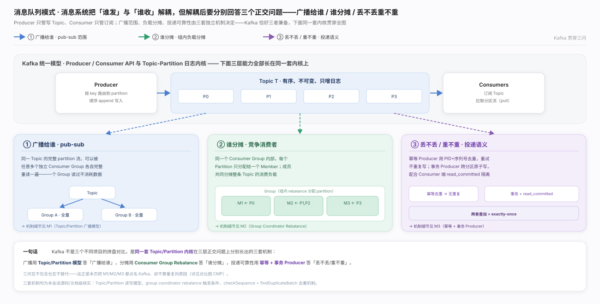
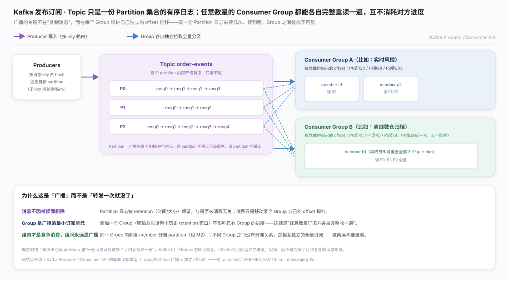
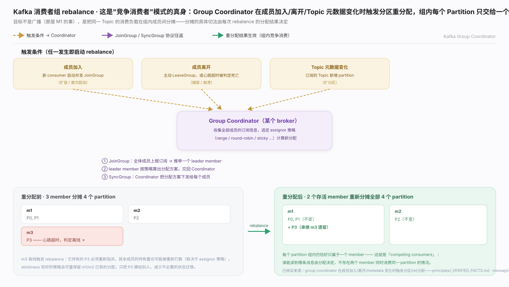
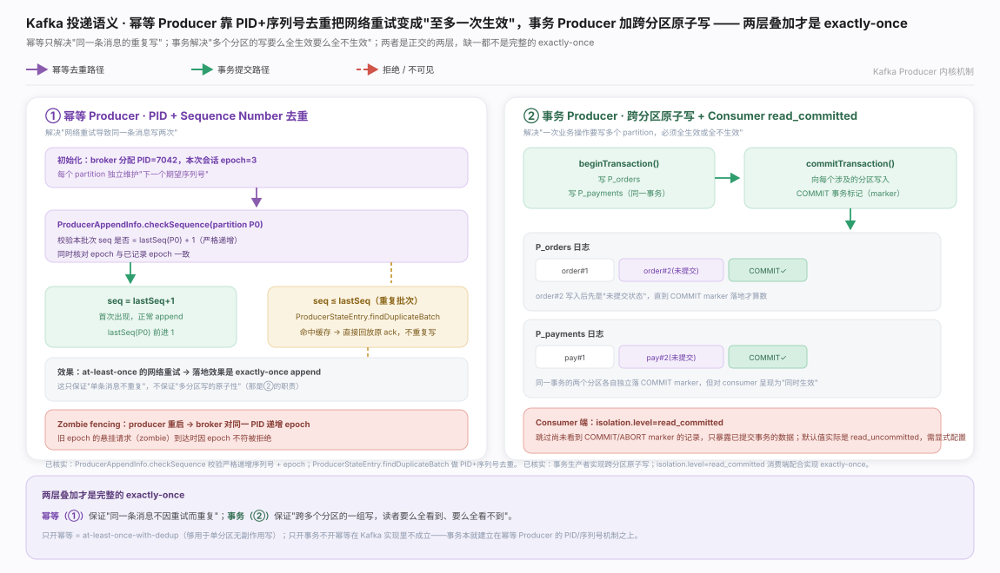
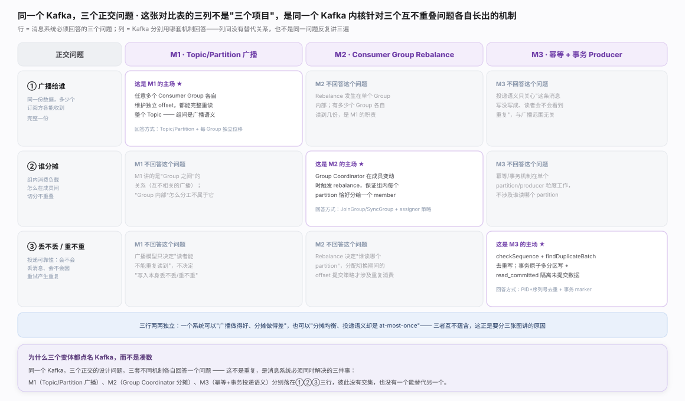

消息队列解耦「谁发」与「谁收」后，必须分别回答三个正交问题：广播给谁 / 组内谁分摊 / 丢不丢重不重——三者两两独立，广播模型答不出投递可靠性。Kafka 在同一套内核上三者兼备，故 M1/M2/M3 均以它为样本，三问的正交关系与落点见生态图。

发布订阅 · Topic/Partition：Partition 是有序、只增的日志，按 retention 保留、与是否被读过无关；「广播」的关键不在复制消息，而在每个 Consumer Group 独立维护自己的 offset，读写模型见图。

消费者组 · Rebalance：成员变动或订阅变化触发 Group Coordinator 重分配分区，核心不变量是同一 Partition 任一时刻只交给一个成员，故负载被互不重叠地分摊，触发条件与流程见图。

投递语义 · exactly-once：两个正交层——幂等 Producer 把重试变成「精确一次 append」（解决单条重复），事务 Producer 用跨分区 marker + 消费端 read_committed 做多分区原子写；两层叠加才是完整 exactly-once，机制见图。

M1/M2/M3 是同一张表的三行而非三个候选方案，回答三个不重叠的问题、两两独立无替代关系——广播模型好不代表组内分摊好，分摊均衡也不保证投递语义强。三行各自的空白与取舍见对比图。一句话总纲：设计消息系统要三问分开答，别用一个模型的强项掩盖另两问的短板。